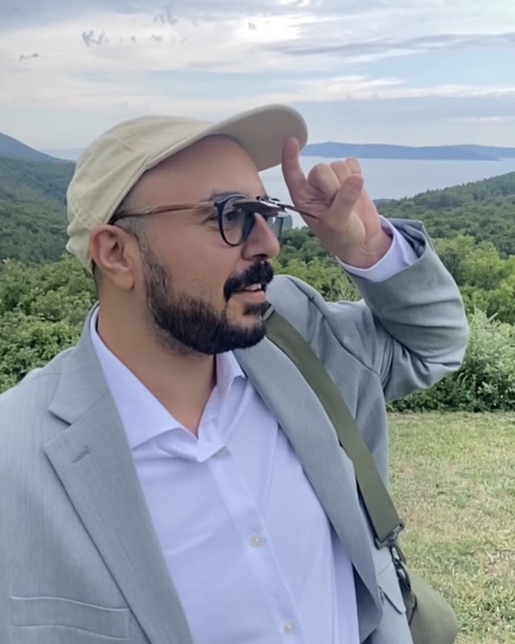

Mohamed Elsafty
Editor, Documentary and Commercial

Born in Egypt, raised in Jersey, schooled in PA, and now a Brooklyn-based documentary and commercial editor. Fluent in English and Arabic, with a proud sixth-grade command of Spanish.
After moving to NYC, I worked as an assistant editor on a number of notable documentaries, including For Ahkeem, Transmilitary and This Much We Know. In 2019 I was a Karen Schmeer Mentee. These days I gravitate toward crafting human stories, big and small.